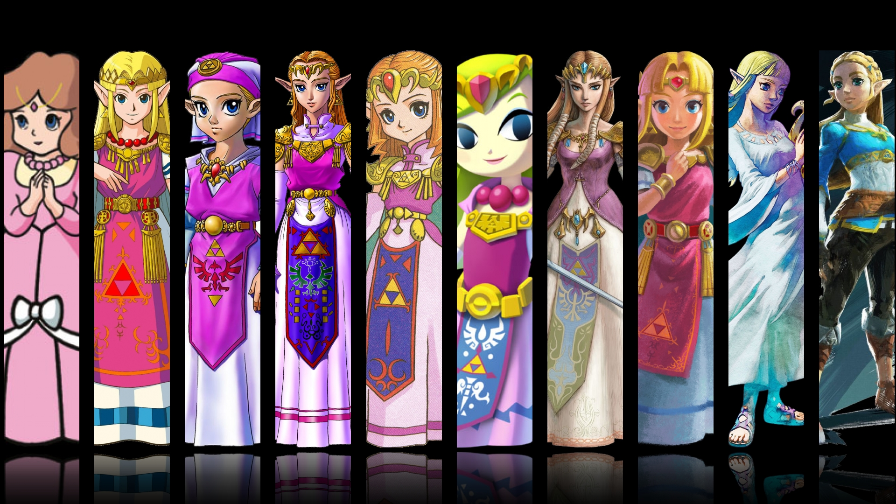
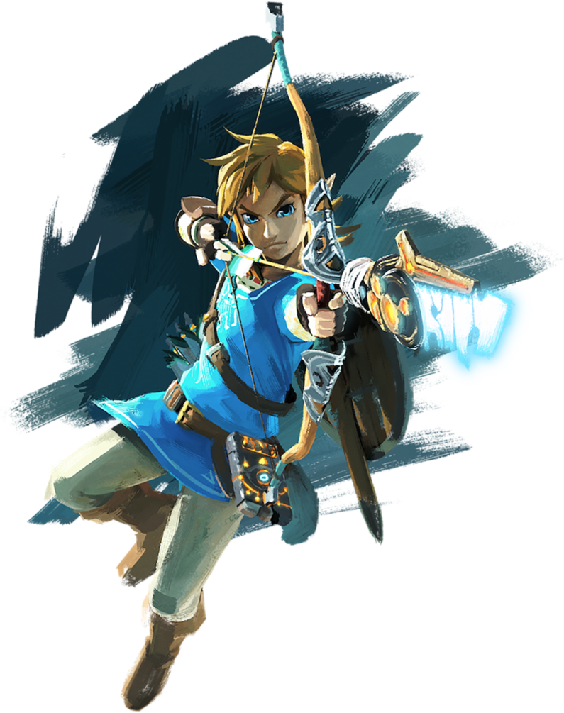
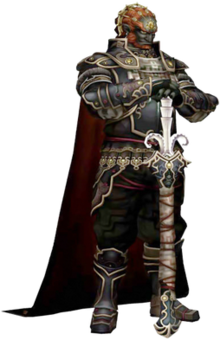

등장인물

위 사진처럼 시리즈마다 생김새가 약간씩 다르다. 황혼의 공주나 시리즈 첫작 젤다의 경우 갈색머리를 하고 있으며, 4개의 검에서는 이례적으로 포니테일을 하기도 했다.

공주를 도와 마왕을 물리쳐야 하는 사명을 가진다.
항상 올바른 길로 묵묵히 모험을 헤쳐나가는 전형적인 동화 속 주인공의 모습이다.
세계에 위험이 닥칠 때마다 출현하는 전설의 용사로, '플레이어의 대리인'이라는 역할에 충실한 게임 주인공. 이 때문에 NPC들과 대화는 하지만 작중 묘사되지는 않는다.

링크와 젤다의 숙적. 즉, 마리오와 쿠파 같은 관계라 보면 이해가 편하다.
용사 링크, 젤다 공주와는 달리 모든 작품에서 등장하지는 않지만 젤다의 전설 시리즈 최고의 인기 악역.